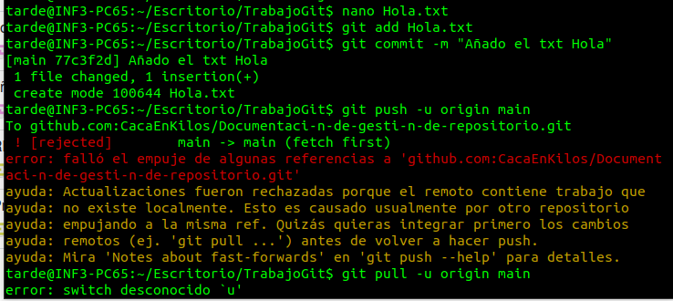
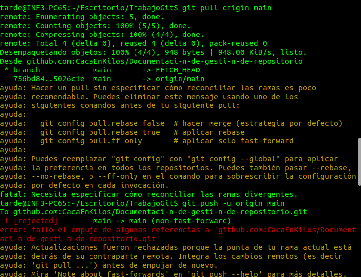

¿Qué es una Pull Request? ¿Cómo podriamos realizar una? ¿Qué utilidad tiene?
Una Pull Request facilita la colaboración entre dos o mas personas  en desarrollar un trabajo.
en desarrollar un trabajo.
Las Pull Requests  son un mecanismo para que los desarrolladores notifiquen a los miembros de su equipo que han
terminado una función.
son un mecanismo para que los desarrolladores notifiquen a los miembros de su equipo que han
terminado una función.
Pero una Pull Request es mucho más que una notificación: es un foro especializado para debatir sobre una
función
propuesta.
Para realizar una Pull Request mediante comandos  puedes seguir estos pasos:
puedes seguir estos pasos:
1. Crea una nueva rama  (branch) donde vayas a realizar los cambios.
(branch) donde vayas a realizar los cambios.
"git checkout -b nombre_de_tu_rama"
2. Realiza los cambios requeridos. Puede usar el editor que quieras para realizar los cambios.
3. Añade los cambios al stage de Git.
"git add"
4. Haz un commit de tus cambios  .
.
"git commit -m "Descripción_de_los_Cambios" "
Sube los cambios a GitHub.
"git push origin nombre_de_tu_rama"
5. Crea la Pull Request. Para esto, puedes usar el comando request-pull.
"git request-pull master origin"
Este comando solicitará que se extraigan los cambios de tu rama al repositorio original.
Recuerda que estos pasos son generales y pueden variar dependiendo del flujo de trabajo que estés
utilizando.
Es importante siempre mantener tu rama actualizada con la rama principal para evitar conflictos al momento
de
hacer la Pull Request.
Pon ejemplos de conflictos que te hayan surgido durante la resolución de este proyecto.
Ejemplos de conflicto:
1- Christian hizo los dos primeros commits, luego Raúl añadió otros dos commits.
Al día siguiente yo creé un txt para ver cómo se comporta git, por lo que tras hacer el add y el commit, al
hacer el push me daba error.

Nos dimos cuenta de que mi repositorio local estaba desactualizado, por lo que intenté hacer un pull, pero me
daba error.

Finalmente, tras probar varias cosas decidí ayudarme de internet y vi que necesitaba este comando:
“pull.rebase false”.
Sinceramente no sé muy bien por qué pero después sí pude hacer el pull pero antes se me hizo un merge.
2- Christian hizo una rama "Raul" para ver si podía añadir cosas desde su rama, y Christian sí pudo, luego
Raúl al intentar añadir algo le da error. También le da error al hacer pull.
Christian eliminó la rama de su repositorio local para ver si es que al estar dos personas interactuando en
la misma rama peta o algo. Tras borrarla a Raúl le sigue dando error. Yo me la he vuelto a crear para ver si
solo le pasa a él. A Christian tampoco le dejaba hacer ni commits ni pull.
Hemos buscado en internet y pone que es debido a que hay un conflicto de fusión, para solucionarlo hemos
encontrado que hay que hacer el git fetch.